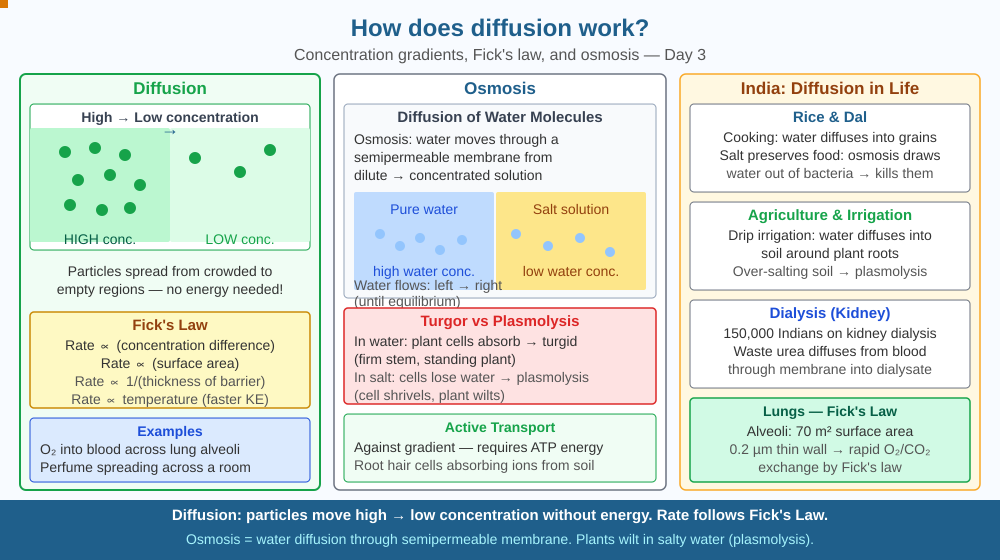

By the end of this lesson, you should be able to define diffusion, explain how concentration gradients drive it, and predict how temperature or particle size affects diffusion rate.
You spray perfume in one corner of a room. Within minutes, people on the other side smell it — without any fan or wind. Gas particles spread by themselves. Why do they always spread from high concentration to low, and never the other way?
Diffusion: The net movement of particles from a region of high concentration to low concentration, driven purely by random particle motion — no energy input needed.
Why it works: Particles move randomly in all directions. In a region of high concentration, there are more particles randomly moving outward than there are particles from the low-concentration region randomly moving inward. The net flow is outward — from high to low. This is a statistical effect of random motion, not a directed force.
Fick's Law: Rate of diffusion ∝ (concentration difference) × (surface area) / (thickness of membrane)
Factors affecting rate: - Higher temperature → faster particles → faster diffusion - Smaller molecules → move faster → diffuse faster - Steeper gradient (bigger concentration difference) → faster diffusion - Larger surface area → more pathways → faster diffusion
Osmosis is a special case of diffusion — water molecules diffuse through a semipermeable membrane from low solute concentration (high water concentration) to high solute concentration (low water concentration).
Picture a packed cinema hall (high concentration of people) connected by a wide doorway to an empty lobby (low concentration). When the film ends, people leave through the door — not because a force pushes them toward the lobby, but because there are simply more people on one side making random choices. With 500 people in the hall and 5 in the lobby, statistically far more random steps carry people from hall to lobby than from lobby to hall. The net flow is always from more crowded to less crowded.
Now make it more precise:
This is why diffusion always runs from high to low concentration: it is not a force, it is statistics. At equilibrium (equal concentrations), particles still move in both directions equally — there is no net flow, but motion never stops.
The SVG diagram is split into two halves separated by a dotted vertical line labelled "concentration gradient." The left half is shaded dark red with densely packed particle dots labelled "High concentration." The right half is pale with sparse dots labelled "Low concentration." Arrows of different lengths cross the dotted line: many long arrows point from left to right, and a few short arrows point from right to left. A net arrow beneath both panels points left-to-right and is labelled "Net diffusion." A smaller inset panel at the bottom shows Fick's Law written out symbolically, with each variable (concentration difference, surface area, membrane thickness) colour-coded and matched to a labelled part of the diagram. A second inset shows two identical containers — one at 20°C with slow-moving arrows and one at 60°C with fast-moving arrows — to illustrate the temperature effect.

Every cell in your body relies on diffusion for gas exchange: oxygen from air diffuses through alveoli in your lungs into blood, CO₂ diffuses out. India has ~100 million asthma patients — inflamed airways reduce the surface area available for diffusion, causing breathlessness. Dialysis machines (used by ~200,000 kidney patients in India) mimic diffusion: blood flows past a membrane; waste urea and excess salts diffuse out into dialysis fluid. Understanding diffusion underlies every drug delivery system — tablets, patches, inhalers — designed by India's generic drug industry, which supplies 20% of global medicines.
Place one drop of ink in the centre of a petri dish of still agar gel (or very still water). Observe over 10 minutes. The colour spreads outward in all directions equally — this is pure diffusion, no convection. Put the dish in sunlight (warmer) and compare to a dish in shade. The warmer dish shows faster spreading — temperature increases particle kinetic energy, increasing diffusion rate.
If you have two identical dishes, add the same sized ink drop to each at the same time. Leave one at room temperature and wrap the other in a cloth soaked in warm water (about 40°C). After 5 minutes, photograph both and estimate the diameter of the stain. The warm dish stain should be noticeably wider — a direct, measurable demonstration of how temperature affects diffusion rate.
Graham's Law of Diffusion: rate ∝ 1/√(molecular mass). So hydrogen (mass 2) diffuses 4× faster than oxygen (mass 32). This principle was used in the Manhattan Project to separate uranium-235 from uranium-238 for nuclear weapons — the lighter ²³⁵UF₆ molecules diffused slightly faster through membranes, allowing gradual separation. India's uranium enrichment at the Nuclear Fuel Complex, Hyderabad, uses similar diffusion principles.
The same statistical foundation that explains perfume spreading in a room also explains why a sugar cube dropped in a cup of tea will eventually sweeten the whole cup without stirring — the sugar molecules walk a "random walk," and over enough steps, they reach every corner of the liquid. Mathematically, the distance a particle diffuses scales with the square root of time: to diffuse twice as far, it needs four times as long. This is why diffusion across a single cell (10 µm) takes milliseconds, but diffusion across a room (5 m) takes many minutes.
Predict: A dialysis patient's blood contains 0.8 g/L of urea. The dialysis fluid starts with 0 g/L urea. As dialysis runs, the fluid fills with urea. At what point would you expect the rate of urea removal from the blood to slow down significantly — and why? What would the dialysis technician have to do to maintain the rate?
What correctly describes diffusion?
Correct answer: B
Why is understanding the mechanism of diffusion more useful than memorising the definition?
Correct answer: B
If temperature were increased, what would you predict about the rate of diffusion?
Correct answer: C
A student sets up an experiment to test how membrane thickness affects diffusion. She fills a sausage-shaped dialysis tube (a semipermeable membrane) with concentrated glucose solution and places it in a beaker of pure water. She has two membrane samples: thin (0.02 mm) and thick (0.08 mm).
Using Fick's Law, predict how the rate of glucose diffusion will differ between the two membranes. Then explain: if she doubled the surface area of the thin membrane (by using a larger tube) and also doubled the concentration difference, by what factor would the diffusion rate change? Show your reasoning step by step. Finally, identify one biological structure in the human body that maximises diffusion rate by exploiting all three variables in Fick's Law simultaneously.
Diffusion is fast enough for cells but far too slow for rooms at human body temperature. Oxygen diffuses across a cell membrane (about 10 micrometres) in about 0.1 milliseconds — fast enough to supply a mitochondrion. But if you had to rely on diffusion alone to supply oxygen to a human body from the lungs (about 1 metre), it would take roughly 11 years. This is why multicellular life required a circulatory system: the heart is a bulk-flow pump that solves the distance problem that diffusion cannot.
Diffusion is net particle movement from high to low concentration, driven entirely by random motion — no energy input required — and its rate increases with temperature, surface area, and concentration difference.